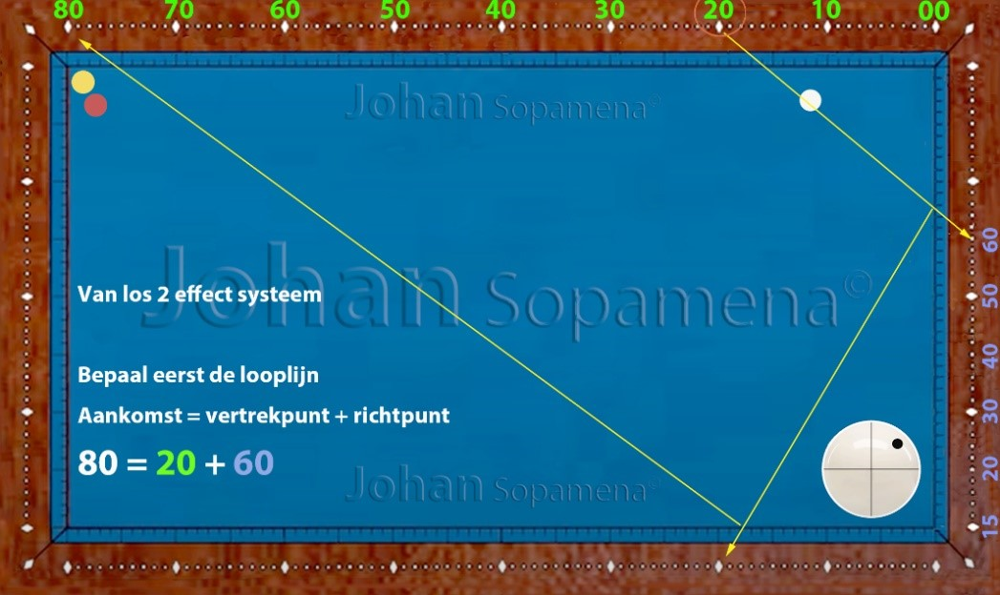

Chapter 8: 2‑Effect System
8.1 Figure 01: explained
The 2‑Effect system focuses entirely on shots where the cue ball is played with standard 2 effect. In three‑cushion play this is one of the most commonly used spin strengths, because it provides an ideal balance between control and deviation.
In this chapter we look at how 2 effect influences the running line, how to choose the correct aiming points, and what corrections are needed under different table conditions and playing positions.
8.2 Basic Principle of the 2‑Effect System
With 2 effect the cue ball gains a clearly noticeable sideways rotation, without losing control. The spin ensures that the ball:
- makes a larger angle after contact with the rail
- runs longer in the direction of the spin
- becomes sensitive to speed and table speed
In many three‑cushion patterns, 2 effect is the “default setting” from which the player makes small adjustments (slightly less or slightly more spin).
8.3 Reference Points and Calculations
The 2‑Effect system uses fixed aiming points on the rails, combined with a constant spin strength. The player first chooses:
- The starting point of the cue ball
- the desired arrival point on the third rail
- finds the running lines
- applies the two-spin scoring system
Based on this, an aiming point is chosen that is adjusted for 2 effect. Small variations in speed or thickness are then used as fine corrections.
8.4 Explanation and Examples
The figures below show typical situations where 2 effect is the ideal choice. The running lines show how the cue ball behaves with constant spin strength and varying departure and arrival points.
Pay special attention to:
- how the line changes with more or less speed
- the influence of a thicker or thinner object ball
- the shift of the aiming point with different arrival points
- the influence of table speed on the length of the line
By training these patterns systematically, the player develops a reliable feel for 2 effect in different playing positions.
8.5 Explanation of Figure 01
Figure 01 is played individually with 2 effects. The arrival point is 80, the departure point is 20, and the target point is 60. Formula: ARRIVAL POINT - DEPARTURE POINT = TARGETING POINT. You can see that this scoring system is quite simple to learn. The other figures work the same, even if you play the starting ball via ball 2.Figure 01: 2 effect SLL (from short-long-long)
 Figure 01: 2 effect SLL (from short-long-long)Figure 02: 2 effect SLL (from short-long-long)
 Figure 02: 2 effect SLL (from short-long-long)
Figure 02: 2 effect SLL (from short-long-long)
Figure 03: 2 effect SLL (short-long-long) Starting point via ball 2
 Figure 03: 2 effect SLL (short-long-long) Starting point via ball 2
Figure 03: 2 effect SLL (short-long-long) Starting point via ball 2